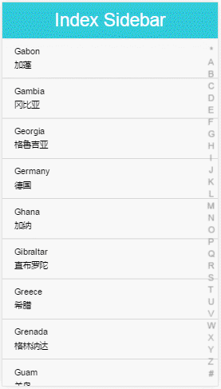

一步一步实现字母索引导航栏
（点击上方公众号，可快速关注）
作者：伯乐在线专栏作者 - lubootang
链接：http://web.jobbole.com/88889/
先来看下实现后的效果：

链接：在线DEMO（http://www.luobotang.cn/index-sidebar/），源代码（https://github.com/luobotang/index-sidebar）
这个索引导航栏的效果在很多 APP 中都有应用，我也是参考了一些 APP 的效果进行实现。
不过之前接触移动端页面开发较少，所以是边学边做，也就把这个过程中的一些东西整理记录下来。
设计
这个功能的基本需求可以总结为一句话：手指在导航栏（也就是 DEMO 上页面右侧的包含字母的竖条）拖动时，根据当前手指位置，页面主体内容列表跳转到对应字母的内容项。
当然，延伸开来，可以是对于已经排序的列表，导航栏显示对应的索引字符列表，支持快速跳转到对应的索引位置。
这里主要介绍导航栏的实现，只看导航栏的话，其实要实现的东西比较简单，只需要在手指移动时获取对应的字母即可。页面主体内容列表的跳转应该交由另一个列表组件实现。
在程序代码中，组合导航栏和内容列表两个组件，导航栏索引字母更新时，内容列表跳转到对应的位置。
结合 DEMO，整体的实现逻辑为：
// 创建一个内容列表组件
var itemList = new ItemList(data)
// 创建一个索引导航组件
var indexSidebar = new IndexSidebar()
// 组合两个组件实现功能
// 监听索引导航组件，一旦索引字符更新，内容列表跳转至对应的索引字符
indexSidebar.on('charChange', function (ch) {
itemList.gotoChar(ch)
})
接下来，我们一步步实现。
第 1 步：创建 IndexSidebar “类”
我选择采用实例化“类”的方式来创建新的组件对象，定义“类”，其实就是创建一个构造函数（当然，采用 ES6 语法会更清晰，不过考虑兼容性这里不使用）：
function IndexSidebar(options) {
// TODO 处理 options
this.initialize(options)
}
IndexSidebar.prototype.initialize = function (options) {
// TODO 初始化
}
这里借鉴 Backbone 的模式，将组件初始化的逻辑单独写在一个 initialize() 方法中，当然逻辑也可以都写在构造函数中。
在实现具体的功能前，我们可以先让前面设计的代码跑起来，首先补全导航组件的接口方法，支持监听事件：
// 特定事件触发时，调用传入的回调函数并传入事件数据
IndexSidebar.prototype.on = function (event, callback) {
// TODO 实现事件监听
}
这里选择采用事件模式（或者说观察者模式吧），这样可以有多个“观察者”，为了完整，同样借鉴已有的模式实现，我们补全其他会用到的事件接口方法：
// 触发特定事件，并给出事件数据供监听的回调函数使用
IndexSidebar.prototype.trigger = function (event, data) {
// TODO
}
// 解除事件监听
IndexSidebar.prototype.off = function (event, callback) {
// TODO
}
接着来搭个列表组件的架子，同样是类的模式，不过简单点，毕竟主要是为了实现索引导航栏组件，列表组件只是辅助：
// 内容列表组件
function ItemList(data) {
return {
gotoChar: function (ch) {
// TODO 实现按索引字符跳转功能
}
}
}
这里偷懒了，虽然兼容 new ItemList(data) 的用法，但其实并没有按照“类”的模式实现。
好了，有了上面的这些代码，前面的设计应该可以运行了….虽然现在没什么用。
第 2 步：实现手指拖动更新索引字母
我们首先解决导航组件最重要的交互功能，也就是手指拖动的动作处理。由于之前没做过触摸的功能，我只好先查下相关的事件用法（当然，尽管没用过，还是知道有相关的事件）：
Touch events – MDN
touchstart – MDN
touchmove – MDN
touchend – MDN
看了上面这些文档，我发现 touch 相关的事件还有个特殊的事件数据，对应的是手指触摸屏幕的位置：Touch – MDN，显然这个数据是会用到的。
之前做 PC 页面的时候，也做过类似的鼠标拖动的处理，使用到的浏览器事件主要是：mousedown, mousemove, mouseup。大致的处理逻辑是：
鼠标按下（mousedown）时，记录拖动开始
鼠标移动（mousemove）时，如果拖动开始，则根据鼠标位置更新并计算相关数据
鼠标松开（mouseup）时，记录拖动结束
这个逻辑也可以用在手指触摸的拖动上。注意一个小细节，手指在屏幕上触摸时，可能同时有多个位置，所以触摸事件的位置相关数据是一个列表：TouchList – MDN。不过我这里不关心，只取列表中的第一个位置数据使用。
这一部分的代码逻辑实现为：
IndexSidebar.prototype.initEvents = function (options) {
var el = this.el // el 对应导航栏容器元素，初始化过程略
var touching = false
el.addEventListener('touchstart', function (e) {
if (!touching) {
// 取消缺省行为，否则在 iOS 环境中会出现页面上下抖动
e.preventDefault()
var t = e.touches[0]
start(t.clientX, t.clientY)
}
}, false)
// 拖动过程中手指可能会移出导航栏，所以是在 document 上监听
// 不过貌似在 el 上监听也可以，这个暂不讨论了
// 后面的 touchend 也是类似的缘故
document.addEventListener('touchmove', function handler(e) {
if (touching) {
e.preventDefault()
var t = e.touches[0]
move(t.clientX, t.clientY)
}
}, false)
document.addEventListener('touchend', function (e) {
if (touching) {
e.preventDefault()
end()
}
}, false)
// TODO 实现索引字符的更新
function start(clientX, clientY) {}
function move(clientX, clientY) {}
function end() {}
}
之所以抽出 start(), move(), end() 三个函数，是为了在 PC 浏览器器上支持鼠标的拖动，这样监听鼠标拖动相关事件时，也能使用这里的逻辑。
怎么计算手指触摸位置的字符呢？这个我想大家应该都能想到，我这里采用的是比较笨的方法，就是根据触摸位置计算索引导航栏中的距离最近的字符，大致过程为：
已知手指相对屏幕（其实是视口，这里不区分了）位置（clientX, clientY）和索引字符数组（chars）
获取索引导航组件距屏幕顶部的距离（boxClientTop）和自身的高度（boxHeight）
计算得到手指位置在组件内部的相对高度（offsetY）：
offsetY = clientY - boxClientTop根据手指位置的相对高度与组件高度的比例，从索引字符数组中取出对应位置的字符（略，这个不难算）
这里就不贴代码了，都是一些琐碎的计算，还要额外考虑手指位置在竖直方向上超出导航栏范围的情况。
经过以上计算，可以得到一个索引字符 ch，接下来要做的就是通知“观察者”们，字符更新了（如果和上一个索引字符不同的话）：
this.trigger('charChange', ch)
第 3 步：实现组件事件接口
这个其实可以不必多写，类似的实现有很多。不过为了不依赖其他库，我选择自己实现。我就直接贴自己实现的版本了：
/* Event Emitter API */
IndexSidebar.prototype.trigger = function (event, data) {
var listeners = this._listeners && this._listeners[event]
if (listeners) {
listeners.forEach(function (listener) {
listener(data)
})
}
}
IndexSidebar.prototype.on = function (event, callback) {
this._listeners = this._listeners || {}
var listeners = this._listeners[event] || (this._listeners[event] = [])
listeners.push(callback)
}
IndexSidebar.prototype.off = function (event, callback) {
var listeners = this._listeners && this._listeners[event]
if (listeners) {
var i = listeners.indexOf(callback)
if (i > -1) {
listeners.splice(i, 1)
if (listeners.length === 0) {
this._listeners[event] = null
}
}
}
}
使用对象属性 _listeners 来记录事件监听函数，当然这里可以只实现成单个数组，不必搞得这么复杂。不过为了可能的组件扩展的需要，还是这么实现了，这样如果还需要支持其他类型的事件，例如对外暴露触摸开始事件“touchStarted”，事件接口这里就不需要修改了。
第 4 步：实现内容列表跳转至索引字符
到这里其实索引导航栏组件的开发已经结束，不过毕竟看不到效果嘛，所以就实现了简单的内容列表组件，从而可以对导航栏组件进行测试。
内容列表组件在创建时，传入了数据，根据这些数据渲染出列表，并且在渲染的过程中记录索引，从而在输出的 HTML 结构上做出标记，以便查找并跳转：
// 内容列表组件
function ItemList(data) {
var list = []
var map = {}
var html
html = data.map(function (item) {
// 数组中每项为 "Angola 安哥拉" 的形式，且已排序
var i = item.lastIndexOf(' ')
var en = item.slice(0, i)
var cn = item.slice(i + 1)
var ch = en[0]
if (map[ch]) {
return '<li>' + en + '<br>' + cn + '</li>'
} else {
// 同一索引字符首次出现时，在 HTML 上标记
map[ch] = true
return '<li data-ch="' + ch + '">' + en + '<br>' + cn + '</li>'
}
}).join('')
var elItemList = document.querySelector('#item-container ul')
elItemList.innerHTML = html
return {
gotoChar: function (ch) {
// TODO 实现按索引字符跳转功能
}
}
}
由于已在 HTML 结构上标记了索引字符，所以 gotoChar 的逻辑其实就是找带有标记的元素，然后让其移动滚动到组件顶部显示：
return {
gotoChar: function (ch) {
if (ch === '*') {
// 滚动至顶部
elItemList.scrollTop = 0
} else if (ch === '#') {
// 滚动至底部
elItemList.scrollTop = elItemList.scrollHeight
} else {
// 滚动至特定索引字符处
var target = elItemList.querySelector('[data-ch="' + ch + '"]')
if (target) {
target.scrollIntoView()
}
}
}
}
OK，以上就是所有的逻辑了。
第 5 步：完善索引导航组件
其实基本功能已经实现，不过既然是想作为开源组件发布，还是再“包装”下，主要做了以下几方面的完善：
支持根据屏幕高度调整导航栏的高度计算屏幕高度，和组件距离屏幕顶部和底部的距离，将索引字符平均分布。
支持组件配置选项，并提供缺省选项由于不想依赖其他库，且考虑兼容性（不能使用 Object.assign），所以自己实现了：
var defaultOptions = {
chars: '*ABCDEFGHIJKLMNOPQRSTUVWXYZ#',
isAdjust: true, // 是否需要自动调整导航栏高度
offsetTop: 70,
offsetBottom: 10,
lineScale: 0.7,
charOffsetX: 80,
charOffsetY: 20
}
function IndexSidebar(options) {
options = options || {}
// 遍历缺省选项逐一处理
for (var k in defaultOptions) {
if (defaultOptions.hasOwnProperty(k)) {
// 未给出选项值时使用缺省选项值
options[k] = options[k] || defaultOptions[k]
}
}
this.options = options
this.initialize(options)
}
支持不同的方式引用组件这个和一般的模块差不多，不过额外支持了一下 SeaJS（define.cmd）：
(function (factory) {
if (typeof module === 'object' && module.export) {
module.export = factory()
} else if (typeof define === 'function' && (define.amd || define.cmd)) {
define([], factory)
} else if (typeof window !== 'undefined') {
window.IndexSidebar = factory()
}
})(function () {
// ...
return IndexSidebar
})
总结
从看到这个需求，到查文档、设计、实现，以及作为开源工具发布，用了大概不到 1 天的时间。希望可以有同学能够从我的这个过程中收获一些东西吧。
当然，也欢迎提出意见、建议，更欢迎参与完善这个组件：
https://github.com/luobotang/index-sidebar
最后，特别欢迎使用：
npm i index-sidebar
感谢阅读！
关注「前端大全」
看更多精选前端技术文章
↓↓↓